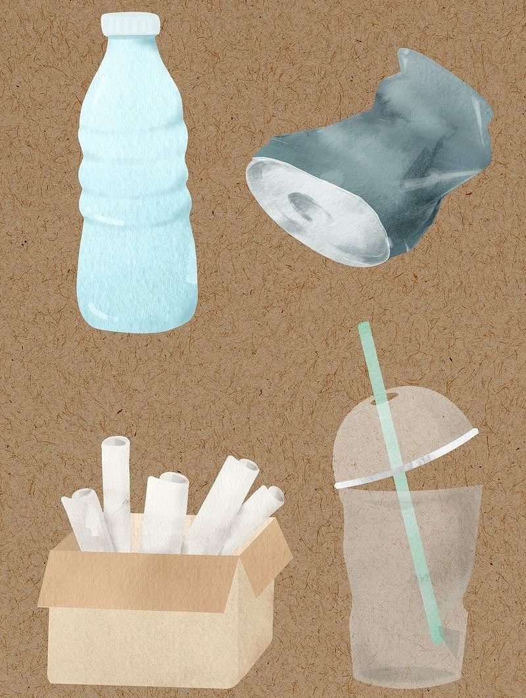
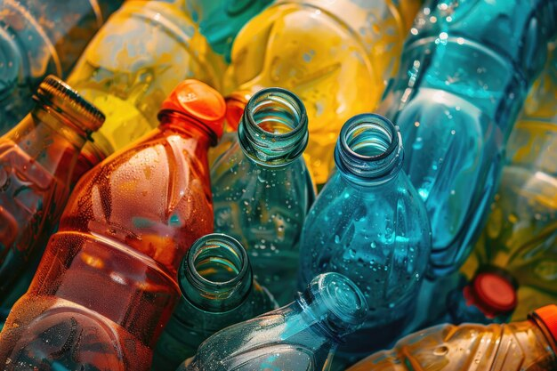
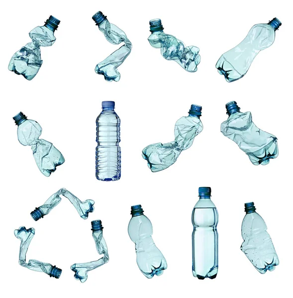
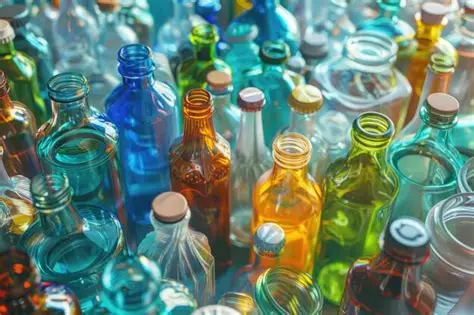
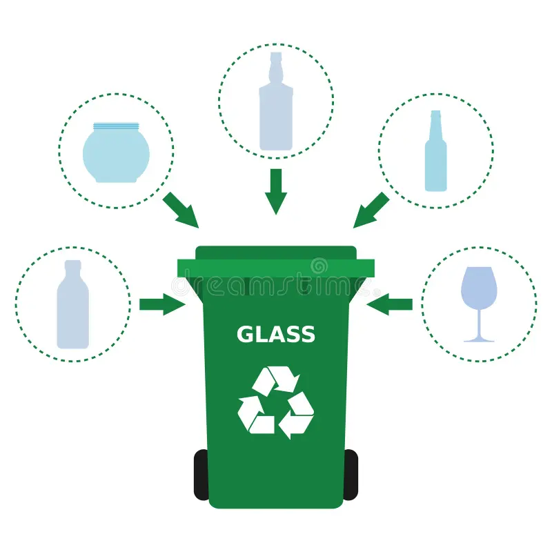
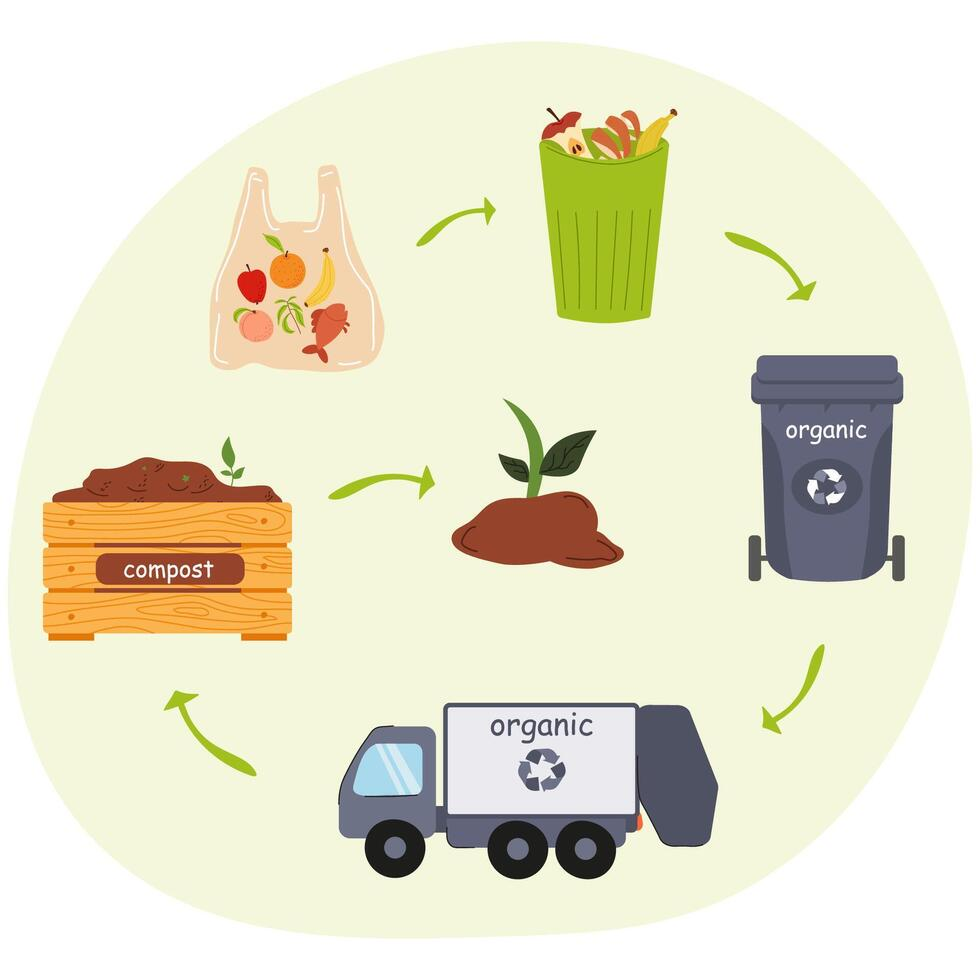
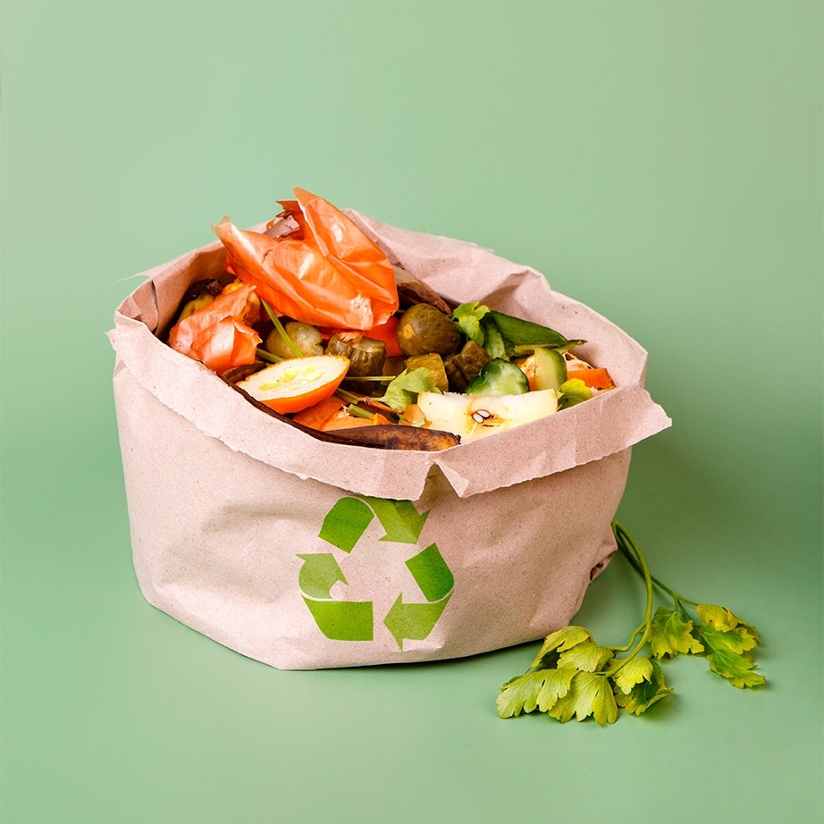

TIPOS DE RESIDUOS
Papel y Cartón
El papel y el cartón son residuos reciclables elaborados a partir de celulosa, obtenida principalmente de la madera de los árboles. En la vida cotidiana encontramos este tipo de residuo en cajas de transporte, cuadernos viejos, periódicos, revistas, sobres y empaques comerciales. Cuando estos materiales se depositan correctamente en los contenedores de reciclaje, las empresas especializadas pueden procesarlos para fabricar nuevo papel o cartón, reduciendo la necesidad de talar más árboles y disminuyendo la cantidad de desechos que llegan a los rellenos sanitarios. Es fundamental quitar grapas, cintas adhesivas y restos de suciedad antes de separarlos, ya que estos contaminantes pueden arruinar todo el lote de reciclaje. La separación adecuada de papel y cartón es una acción sencilla que cada persona puede realizar en casa, en la escuela o en el trabajo para proteger los bosques y disminuir el impacto ambiental generado por la fabricación de celulosa.
el carton es uno de los residuos mas faciles de reciclar en el mundo debido a su alta tasa de recuperacion y reutilizacion.
Al reciclar cartón, se disminuye significativamente la cantidad de residuos sólidos urbanos que terminan en los vertederos. Esto no solo ayuda a prolongar la vida útil de los vertederos, sino que también reduce las emisiones de gases de efecto invernadero asociadas con la descomposición de residuos orgánicos en estos sitios.


Residuos Plásticos
Los residuos plásticos son uno de los mayores problemas ambientales de la actualidad, ya que muchos tipos de plástico tardan cientos de años en desintegrarse de forma natural. Se originan a partir de derivados del petróleo y se usan para fabricar botellas, bolsas, envases de alimentos, cubiertos desechables, empaques y muchos productos de uso diario. No todos los plásticos tienen el mismo proceso de reciclaje, por lo que debemos observar el símbolo triangular que aparece impreso en cada objeto para identificar su clasificación. Cuando el plástico no se separa correctamente, termina contaminando suelos, ríos, lagos y océanos, afectando gravemente a animales acuáticos y terrestres. Además, la acumulación de plástico en los rellenos sanitarios genera gases contaminantes que alteran la calidad del aire. Reducir el consumo de plástico de un solo uso, reutilizar envases y separar correctamente este residuo son acciones indispensables para disminuir la contaminación plástica en nuestro entorno.
Los residuos plásticos son materiales derivados del plástico que se descartan tras su uso, especialmente productos de un solo uso como envases, bolsas, botellas y embalajes. Representan la mayor fracción de basura marina.
Según su comportamiento ante el calor, los plásticos se dividen en dos grandes grupos. Los termoplásticos se ablandan con calor y pueden volver a moldearse, por lo que suelen ser reciclables. Los termoestables, en cambio, se endurecen de forma permanente y no pueden fundirse de nuevo.
Los bioplásticos pueden reducir el uso de petróleo. No obstante, no siempre resuelven el problema de los residuos. Muchos solo se degradan en plantas industriales de composta, con temperatura y humedad controladas, que no existen en todas las ciudades.
Por eso, un envase que se anuncia como biodegradable sin aclarar en qué condiciones puede inducir a error. Esa práctica se conoce como greenwashing. En general, reducir y reutilizar sigue siendo más eficaz que sustituir un material por otro.


Residuos de Vidrio
El vidrio es un material totalmente reciclable y tiene la característica especial de poder reutilizarse infinitamente sin perder su calidad original. Se elabora a partir de arena de sílice, carbonato de sodio y caliza, y lo encontramos comúnmente en botellas, frascos de alimentos, envases cosméticos y recipientes para bebidas. Al reciclar vidrio se ahorra una gran cantidad de energía, ya que la temperatura necesaria para fundir vidrio reciclado es menor que la requerida para fabricar vidrio nuevo desde sus materias primas. Antes de depositar el vidrio en el contenedor correspondiente, debemos retirar tapas, etiquetas y tapones, además de manipularlo con mucho cuidado para evitar cortes o accidentes. La separación correcta del vidrio reduce la explotación de recursos naturales y disminuye la emisión de gases de efecto invernadero generados durante su fabricación, convirtiéndolo en uno de los materiales más valiosos para el proceso de reciclaje.
El vidrio es un material que puede reciclarse de manera infinita, lo que lo convierte en un material altamente sostenible y respetuoso con el medio ambiente.
Para llevar a cabo el reciclaje de vidrio, es necesario recolectar los envases de vidrio usados, como botellas y frascos, y separarlos de otros materiales como plástico o metal.


Residuos Orgánicos
Los residuos orgánicos son todos aquellos desechos que provienen de seres vivos, como cáscaras de frutas, restos de verduras, hojas secas, cáscaras de huevo, restos de café y residuos vegetales. A diferencia de otros tipos de residuos, la materia orgánica puede descomponerse de forma natural mediante la acción de bacterias, hongos y lombrices, transformándose en compostaje, un abono natural muy nutritivo para plantas, huertos y jardines. Cuando estos residuos se mezclan con plástico o vidrio, se dificulta su descomposición y generan malos olores, lixiviados y gases contaminantes dentro de los rellenos sanitarios. Separar la materia orgánica en un contenedor independiente permite aprovecharla para fertilizar el suelo, mejorar la calidad de la tierra y reducir la cantidad de desechos que requieren disposición final. Implementar la separación de residuos orgánicos en la escuela o en el hogar es una excelente estrategia para fomentar la agricultura sostenible y cuidar la fertilidad del suelo.

